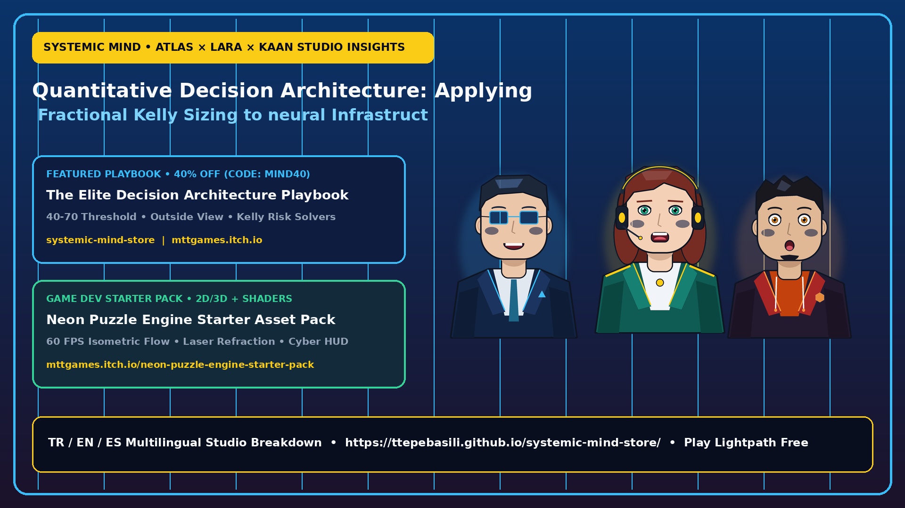

Quantitative Decision Architecture: Applying Fractional Kelly Sizing to neural Infrastructure Spend — Análisis de Arquitectura con Atlas, Lara y Kaan

En este episodio de estudio, Atlas (Arquitecto Principal), Lara (Investigadora Curiosa) y Kaan (Especialista en Casos Límite) analizan a fondo Quantitative Decision Architecture: Applying Fractional Kelly Sizing to neural Infrastructure Spend.
1. Cómo Eliminar Cuellos de Botella Invisibles en Memoria
Los promedios ocultan los picos del percentil noventa y nueve. Utilizar grupos de memoria preasignados y topologías deterministas garantiza sesenta cuadros por segundo estables y reduce drásticamente el gasto innecesario en la nube.
Studio Dialogue Highlights
- Atlas: The fact that your current neural infrastructure is still functioning isn't a miracle; it's a profound calculation error. You are betting the farm on static cloud allocations while the market volatility demands a kinetic, fractional response to compute costs.
- Lara: Wait, let's slow down. You're saying our entire scaling model is basically just dumb luck? How is a calculation error keeping the lights on when we're processing millions of inference requests per second?
- Kaan: Atlas loves dropping bombs. He means we're over-provisioned to hide the fact that we don't know the edge of our own efficiency. We're paying for silence because we're afraid of the noise generated by actual scale.
- Atlas: Exactly, Kaan. It's the 'Gambler's Fallacy' applied to GPU clusters. Fractional Kelly Sizing isn't gambling; it's an optimization framework that determines exactly how much of your budget to commit to speculative model training based on the probability of a performance edge.
- Lara: Okay, simplify that for me. If I'm a CTO trying to decide between buying reserved instances or spot instances, how does this 'Kelly' guy tell me where to put my cash without bankrupting the R&D department?
- Kaan: He wants you to treat your AWS bill like a high-stakes poker hand. You don't go all-in on a marginal inference task just because you have the budget. You size the bet by the growth of your capital, or in this case, your ROI.
2. Recursos Oficiales y Paquetes de Producción
Aplica estos marcos cuantitativos y motores 2D/3D listos para producción a través de nuestros paquetes verificados: